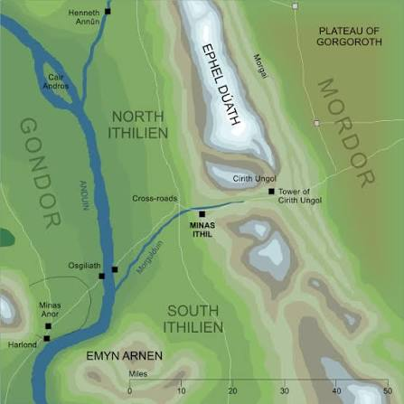
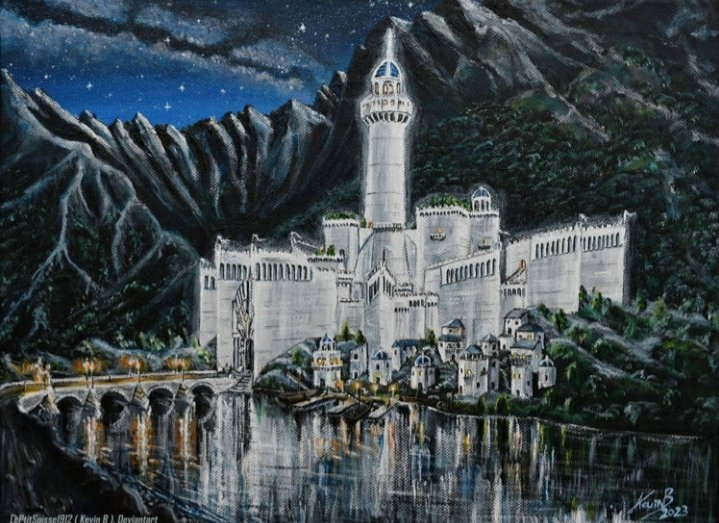

En las faldas de las Montañas de la Sombra (Ephel Dúath) se levanta
Minas Ithil, fundada por Isildur para custodiar el paso hacia Mordor.
Esta página recorre su historia, su identidad, sus barrios y sus costumbres.
En las faldas de las Montañas de la Sombra (Ephel Dúath) se levanta
Minas Morgul, la Torre de la Hechicería, surgida tras la conquista de la
antigua fortaleza por los Nazgûl. Esta página recorre su historia, su identidad, sus
barrios y sus costumbres.

Mapa de la región.Minas Ithil, en las faldas del Ephel Dúath.Minas Morgul, en las faldas del Ephel Dúath.
Minas Ithil, la Torre de la Luna Naciente
Historia
Segunda Edad, hacia el año 3320. Tras la
fundación de Gondor, Isildur funda Minas Ithil
para custodiar el paso hacia Mordor y la
convierte en su residencia en Ithilien. En la torre guarda la
Piedra de Ithil (una de las palantíri) y ante su casa
crece un retoño del Árbol Blanco.
Segunda Edad, año 3429. Sauron toma la ciudad por
sorpresa y quema el árbol. Isildur escapa hacia el oeste llevando
consigo una semilla del Árbol Blanco, y comienza la Guerra de la
Última Alianza.
Segunda Edad, año 3441. Con la derrota de Sauron,
Gondor recupera la torre y la convierte en un puesto de vigía
sobre las tierras de Mordor.
Tercera Edad, año 1636. La Gran Peste llega a
Gondor y vacía a Minas Ithil de sus habitantes; las fortalezas
que vigilaban Mordor quedan abandonadas al retirarse las tropas.
Identidad y características
Minas Ithil era una ciudad de mármol blanco cuyos
muros estaban trabajados para reflejar la luz de la luna: al caer la
noche, la ciudad entera brillaba con un resplandor plateado. Una torre
de muchas ventanas dominaba la ciudadela, y su remate superior giraba
lentamente para seguir el recorrido de la luna. Un puente blanco
cruzaba el río Ithilduin, el Río de la Luna, y las
praderas de ambas orillas eran el lugar de paseo y descanso de los
habitantes.
El casco más alto de la Ciudadela de la Luna,
donde se alza la gran torre de muchas ventanas y el palacio
del Custodio de la Luna. Es el punto desde el que
mejor se aprecian los jardines y el valle al atardecer.
En la explanada de la ciudadela creció el primer Árbol Blanco de
Gondor, sembrado con un fruto de Nimloth. Sauron lo quemó al
tomar la ciudad en el 3429 de la Segunda Edad, e Isildur huyó
llevando consigo una semilla.
Terrazas ajardinadas con fuentes de piedra y miradores sobre el
valle de Ithilien, pensadas para el paseo al atardecer.
El Barrio del Espejo de la Luna
El corazón comercial y festivo: plazas, fuentes de plata y el
mercado donde se reúnen los viajeros que llegan por el camino
desde el oeste.
Las Praderas del Puente Blanco
Los prados a ambas orillas del Ithilduin, junto al puente de
piedra caliza. En primavera se celebran allí las ferias de
flores y las regatas de barcos iluminados con linternas.
Costumbres
El Festival de la Luna Llena
Cada luna llena, los habitantes encienden linternas de papel
de plata y las dejan flotar río abajo, de modo que la corriente
se llena de luces. Se dice que quien confía un deseo a su
linterna lo verá viajar hasta el mar.
La Hora del Silencio
Cuando el remate de la torre gira hacia el oeste y la luna se
oculta tras las colinas, la ciudad guarda un minuto de silencio
en memoria de los que no regresaron del valle.
La Caminata del Espejo
Recorrer a paso lento las fuentes del Barrio del Espejo y
mirarse en ellas al mediodía. Es la costumbre de las parejas
que prometen fidelidad y de los viajeros que piden un buen
regreso.

La ciudadela de Minas Ithil bajo la luna.
Terraza de la Ciudadela de la Luna, el lado luminoso de la ciudad.
Minas Morgul, la Torre de la Hechicería
Historia
Tercera Edad, año 1980. El Rey Brujo de
Angmar regresa a Mordor y reúne a los demás Nazgûl para
preparar el regreso de su señor.
Tercera Edad, años 2000–2002. Tras un sitio de
dos años, Minas Ithil cae en manos de los Nazgûl y su palantír pasa
a Sauron. Desde entonces se la llama Minas Morgul,
la Torre de la Hechicería, en la lengua de Gondor.
Tercera Edad, año 2050. El rey Eärnur acepta el
desafío del Rey Brujo, cabalga hacia el valle y jamás regresa.
Desde entonces, Gondor es gobernado por senescales.
Tercera Edad, año 3019. Durante la Guerra del
Anillo, Frodo y Sam cruzan el valle y el 10 de marzo el Rey Brujo
parte desde allí con su hueste hacia los Campos del Pelennor.
Cuarta Edad. Tras la caída de Sauron, el rey
Elessar dispone que la fortaleza sea derribada por completo y
encomienda a Faramir el señorío de Ithilien. No se sabe si la
ciudad llegó a reconstruirse.
Identidad y características
Tras la caída, la ciudad cambió por completo: sus muros ya no
reflejaban la luna, sino un resplandor pálido y verdoso que emanaba de
ellos. La puerta tenía la forma de una boca abierta con dientes de
brillo siniestro, y el remate de la torre giraba como una cabeza
espectral. El río fue rebautizado Morgulduin, el Río
de la Hechicería, tal como lo describe Frodo en las crónicas de su
viaje por el valle.
Barrios y zonas
La Ciénaga de la Ruina
La zona baja y abandonada, cubierta de niebla y de flores
enfermizas. Solo puede recorrerse con un guía autorizado de la
Oficina del Camino de la Luna; es un recuerdo de los años de
sombra.
Antiguas terrazas de cultivo junto a la Ciénaga de la Ruina,
hoy convertidas en una reserva de flores pálidas que desprenden
un aroma denso y enfermizo al caer el sol.
El acceso tallado como una boca abierta con dientes y ojos,
al final del camino de Morgul y tras el puente sobre el río.
El Puente Blanco sobre el Morgulduin
El antiguo puente de piedra caliza sobre el Morgulduin,
coronado por estatuas corrompidas. Conserva su estructura y
marca el acceso oeste al valle.
Costumbres y leyendas
Las Luces Señuelo
En las noches sin luna suelen aparecer luces pálidas que se
mueven en la Ciénaga de la Ruina. Los guías advierten que no
hay que seguirlas y recomiendan dejar el valle en paz.
Los Narradores de la Ruina
Cuentacuentos que en las plazas del valle recrean las crónicas
de la caída y del dominio de los Nazgûl. De este modo, la ciudad
conserva la memoria de su historia.
El Voto del Vigilante
Los guardias que custodian el valle juran, al terminar su
turno, no mirar atrás hasta llegar a la Puerta de Morgul.
Quien rompe el voto debe esperar a la próxima luna llena para
volver a la guardia.
La fortaleza de Minas Morgul.
La fortaleza del lado tenebroso, velada por las brumas del valle.
Rasgos de Minas Ithil
Rasgos de Minas Morgul
Un resumen de los rasgos que definieron a Minas Ithil en su época de esplendor:
Un resumen de los rasgos que definieron a Minas Morgul desde la conquista de los Nazgûl: